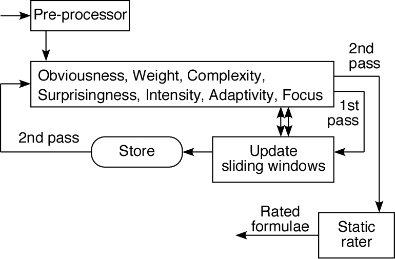

Automatic Rating of Interesting Theorems

- A system for automatic generation of interesting theorems
- ATP generates LCs according to the SoS strategy
- Rating components select interesting LCs
- Loops to reseed the SoS
- Rating component used to analyse completed derivations

Adaptive Runtime Filter
- Obviousness measures derivation size
- Weight measures number of symbols
- Complexity measures number of different symbols
- Surprisingness measures unexpected co-occurences of symbols
- Intensity measures information summary
- Adaptivity measures variable constraints
- Focus measures polarity of atoms
Static Rater
- Measures from the Runtime Filter are normalized
- Usefulness measures proportion of interesting children
- All measures are combined and renormalized